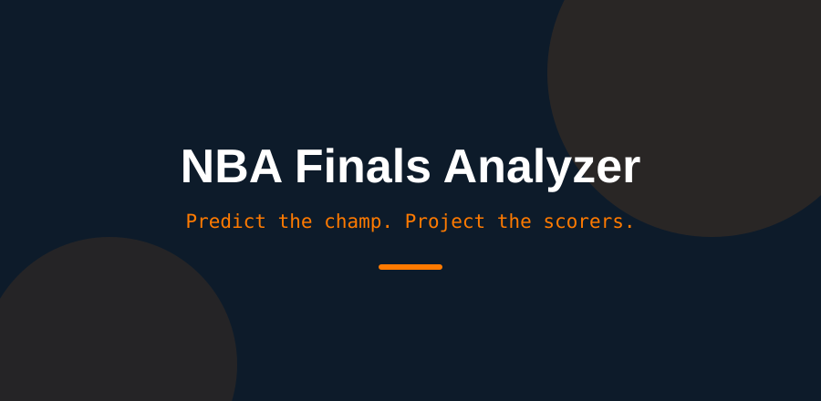
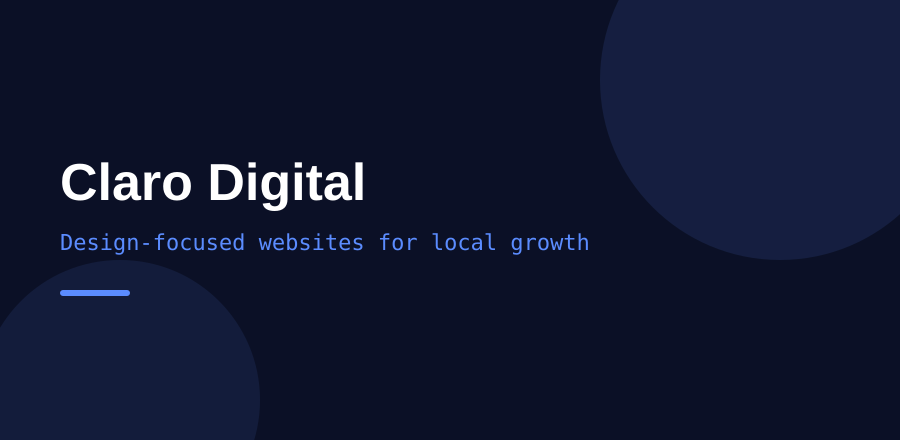
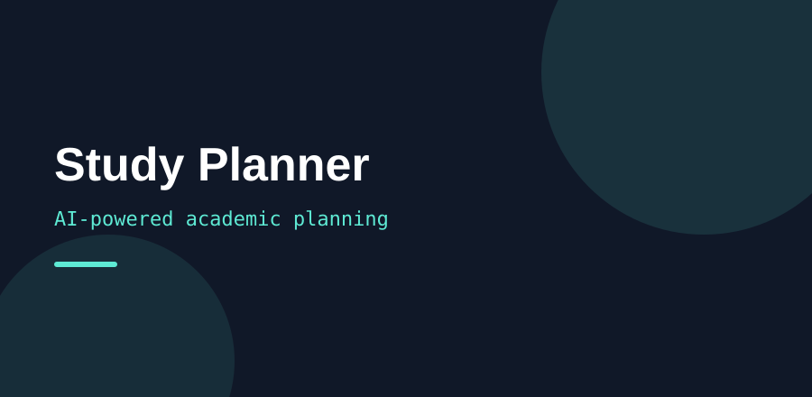
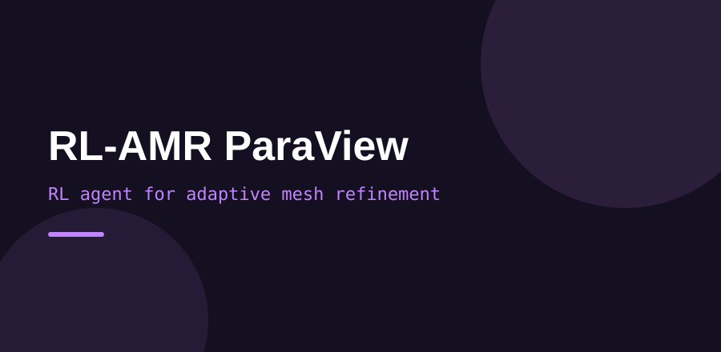

I'm a Computer Science student at the University of North Texas with a mathematics minor and a 4.0 GPA. My experience spans full-stack development, AI model evaluation, and sports and financial data projects. I'm currently seeking software engineering roles in technology and financial services where I can pair technical problem-solving with clean, well-structured systems. Here are some of the technologies I frequently use:

A Python analytics engine that predicts the NBA champion and projects the leading scorer on every roster. Finals probabilities come from a logistic regression trained on every past season — each historical team's win percentage, net rating, and star scoring share, labeled by who won the title. Scorer projections use current-season averages adjusted for teammate usage overlap and mid-season trades. Pulls live data through the nba_api with an automatic offline fallback.

Claro Digital is a marketing agency I co-founded with a small group of friends at the University of North Texas. Our goal is to give small businesses in the DFW area a modern website at a competitive price. I contribute to building client sites with HTML, CSS, and JavaScript, with a strong focus on SEO — structured data, meta tags, and Google Search Console — and deployment on Digital Ocean with custom DNS.

An AI-powered academic planning tool for college students. Students manage tasks, build schedules, and track coursework through a React interface backed by an Express API and SQLite database. I built the full stack solo — frontend, backend, database schema, and WCAG-compliant accessibility fixes — and delivered UML design docs and a usability testing report alongside the code.

A reinforcement learning agent that learns where to refine a computational mesh under a fixed budget, placing refinement masks over high-gradient regions of a 2D scalar field with PPO and ParaView visualization. I diagnosed and fixed a reward-shaping bug that let the random baseline outscore the learned policy, verified the fix with a two-mask sanity check, and the corrected agent beat random by ~3%.
A web app for managing expenses, setting budgets, and visualizing spending trends, built with Python and SQL. Focused on turning raw transaction data into clear, actionable budgeting insights.